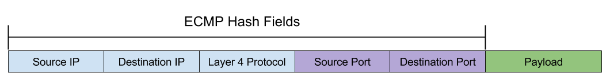
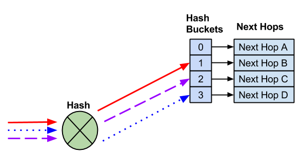
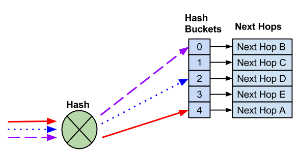
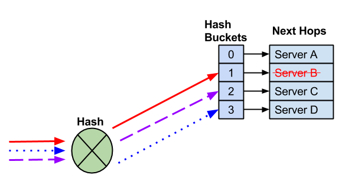
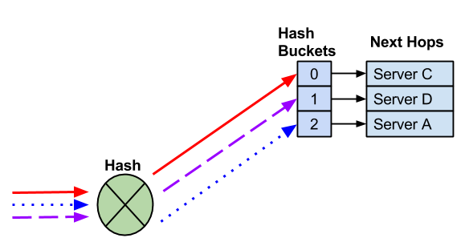
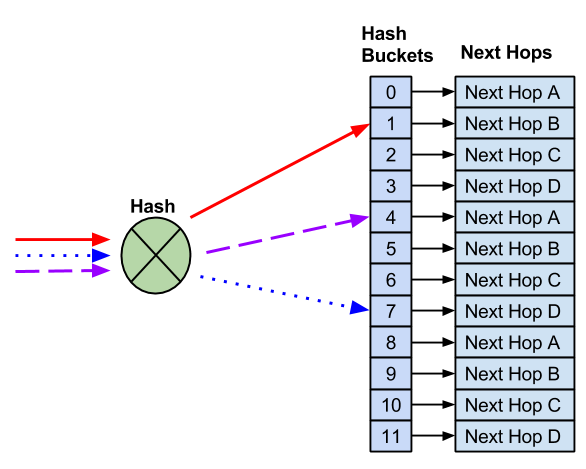
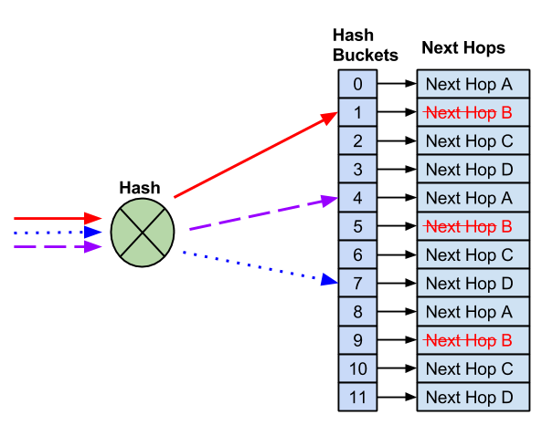
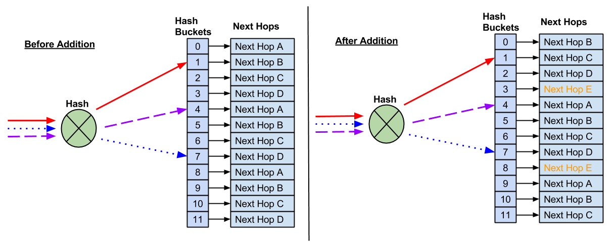

Equal Cost Multipath Load Sharing - Hardware ECMP
Cumulus Linux supports hardware-based equal cost multipath (ECMP) load sharing. ECMP is enabled by default in Cumulus Linux. Load sharing occurs automatically for all routes with multiple next hops installed. ECMP load sharing supports both IPv4 and IPv6 routes.
Contents
Understanding Equal Cost Routing
ECMP operates only on equal cost routes in the Linux routing table.
In this example, the 10.1.1.0/24 route has two possible next hops that have been installed in the routing table:
$ ip route show 10.1.1.0/2410.1.1.0/24 proto zebra metric 20 nexthop via 192.168.1.1 dev swp1 weight 1 onlink nexthop via 192.168.2.1 dev swp2 weight 1 onlinkFor routes to be considered equal they must:
-
Originate from the same routing protocol. Routes from different sources are not considered equal. For example, a static route and an OSPF route are not considered for ECMP load sharing.
-
Have equal cost. If two routes from the same protocol are unequal, only the best route is installed in the routing table.
As of Cumulus Linux 3.0, the BGP maximum-paths setting is enabled, so multiple routes are installed by default. See the ECMP section of the BGP chapter for more information.
Understanding ECMP Hashing
Once multiple routes are installed in the routing table, a hash is used to determine which path a packet follows.
Cumulus Linux hashes on the following fields:
-
IP protocol
-
Ingress interface
-
Source IPv4 or IPv6 address
-
Destination IPv4 or IPv6 address
For TCP/UDP frames, Cumulus Linux also hashes on:
-
Source port
-
Destination port

To prevent out of order packets, ECMP hashing is done on a per-flow basis, which means that all packets with the same source and destination IP addresses and the same source and destination ports always hash to the same next hop. ECMP hashing does not keep a record of flow states.
ECMP hashing does not keep a record of packets that have hashed to each next hop and does not guarantee that traffic sent to each next hop is equal.
Using cl-ecmpcalc to Determine the Hash Result
Since the hash is deterministic and always provides the same result for the same input, you can query the hardware and determine the hash result of a given input. This is useful when determining exactly which path a flow takes through a network.
On Cumulus Linux, use the cl-ecmpcalc command to determine a hardware hash result.
In order to use cl-ecmpcalc, all fields that are used in the hash must be provided. This includes ingress interface, layer 3 source IP, layer 3 destination IP, layer 4 source port and layer 4 destination port.
$ sudo cl-ecmpcalc -i swp1 -s 10.0.0.1 -d 10.0.0.1 -p tcp --sport 20000 --dport 80ecmpcalc: will query hardwareswp3If any field is omitted, cl-ecmpcalc fails.
$ sudo cl-ecmpcalc -i swp1 -s 10.0.0.1 -d 10.0.0.1 -p tcp ecmpcalc: will query hardwareusage: cl-ecmpcalc [-h] [-v] [-p PROTOCOL] [-s SRC] [--sport SPORT] [-d DST] [--dport DPORT] [--vid VID] [-i IN_INTERFACE] [--sportid SPORTID] [--smodid SMODID] [-o OUT_INTERFACE] [--dportid DPORTID] [--dmodid DMODID] [--hardware] [--nohardware] [-hs HASHSEED] [-hf HASHFIELDS [HASHFIELDS ...]] [--hashfunction {crc16-ccitt,crc16-bisync}] [-e EGRESS] [-c MCOUNT]cl-ecmpcalc: error: --sport and --dport required for TCP and UDP framescl-ecmpcalc Limitations
cl-ecmpcalc can only take input interfaces that can be converted to a single physical port in the port tab file, like the physical switch ports (swp). Virtual interfaces like bridges, bonds, and subinterfaces are not supported.
cl-ecmpcalc is supported only on switches with the Spectrum, Tomahawk, Trident II+ and Trident II chipsets.
ECMP Hash Buckets
When multiple routes are installed in the routing table, each route is assigned to an ECMP bucket. When the ECMP hash is executed the result of the hash determines which bucket gets used.
In the following example, 4 next hops exist. Three different flows are hashed to different hash buckets. Each next hop is assigned to a unique hash bucket.

Adding a Next Hop
When a next hop is added, a new hash bucket is created. The assignment of next hops to hash buckets, as well as the hash result, may change when additional next hops are added.

A new next hop is added and a new hash bucket is created. As a result, the hash and hash bucket assignment changed, causing the existing flows to be sent to different next hops.
Removing a Next Hop
When a next hop is removed, the remaining hash bucket assignments may change, again, potentially changing the next hop selected for an existing flow.


A next hop fails and the next hop and hash bucket are removed. The remaining next hops may be reassigned.
In most cases, the modification of hash buckets has no impact on traffic flows as traffic is being forward to a single end host. In deployments where multiple end hosts are using the same IP address (anycast), resilient hashing must be used.
Resilient Hashing
In Cumulus Linux when a next hop fails or is removed from an ECMP pool, the hashing or hash bucket assignment can change. For deployments where there is a need for flows to always use the same next hop, like TCP anycast deployments, this can create session failures.
The ECMP hash performed with resilient hashing is exactly the same as the default hashing mode. Only the method in which next hops are assigned to hash buckets differs.
Resilient hashing supports both IPv4 and IPv6 routes.
Resilient hashing is not enabled by default. See below for steps on configuring it.
Resilient hashing prevents disruptions when new next hops are removed. It does not prevent disruption when next hops are added.
Resilient Hash Buckets
When resilient hashing is configured, a fixed number of buckets are defined. Next hops are then assigned in round robin fashion to each of those buckets. In this example, 12 buckets are created and four next hops are assigned.

Removing Next Hops
Unlike default ECMP hashing, when a next hop needs to be removed, the number of hash buckets does not change.

With 12 buckets assigned and four next hops, instead of reducing the number of buckets — which would impact flows to known good hosts — the remaining next hops replace the failed next hop.
After the failed next hop is removed, the remaining next hops are installed as replacements. This prevents impact to any flows that hash to working next hops.
Adding Next Hops
Resilient hashing does not prevent possible impact to existing flows when new next hops are added. Due to the fact there are a fixed number of buckets, a new next hop requires reassigning next hops to buckets.

As a result, some flows may hash to new next hops, which can impact anycast deployments.
Configuring Resilient Hashing
Resilient hashing is not enabled by default. When resilient hashing is enabled, 65,536 buckets are created to be shared among all ECMP groups. An ECMP group is a list of unique next hops that are referenced by multiple ECMP routes.
An ECMP route counts as a single route with multiple next hops. The following example is considered to be a single ECMP route:
$ ip route show 10.1.1.0/2410.1.1.0/24 proto zebra metric 20 nexthop via 192.168.1.1 dev swp1 weight 1 onlink nexthop via 192.168.2.1 dev swp2 weight 1 onlinkAll ECMP routes must use the same number of buckets (the number of buckets cannot be configured per ECMP route).
The number of buckets can be configured as 64, 128, 256, 512 or 1024; the default is 128:
|
Number of Hash Buckets |
Number of Supported ECMP Groups |
|
64 |
1024 |
|
128 |
512 |
|
256 |
256 |
|
512 |
128 |
|
1024 |
64 |
A larger number of ECMP buckets reduces the impact on adding new next hops to an ECMP route. However, the system supports fewer ECMP routes. If the maximum number of ECMP routes have been installed, new ECMP routes log an error and are not installed.
To enable resilient hashing, edit /etc/cumulus/datapath/traffic.conf:
-
Enable resilient hashing:
# Enable resilient hashingresilient_hash_enable = TRUE -
(Optional) Edit the number of hash buckets:
# Resilient hashing flowset entries per ECMP group# Valid values -64,128,256,512,1024resilient_hash_entries_ecmp =256 -
Restart the switchd service:
cumulus@switch:~$ sudo systemctl restart switchd.service
Caveats and Errata
Resilient hashing is supported only on switches with the Tomahawk, Trident II+ and Trident II chipsets. You can run netshow system to determine the chipset.